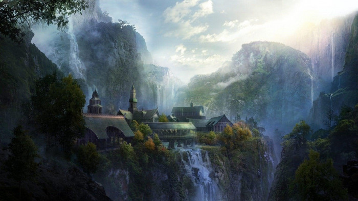
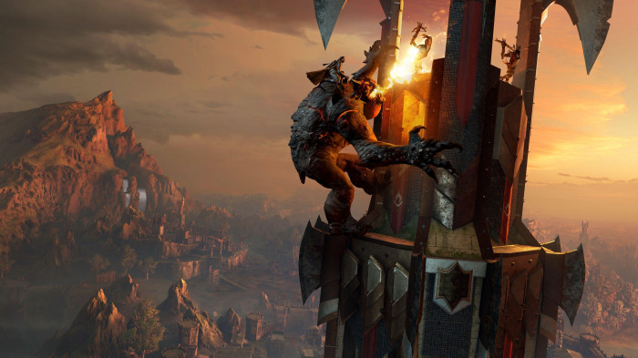

Black Adam, starring the wrestling legend and actor as the titular antihero, is a spinoff and sequel to the 2019 movie Shazam!. The movie has been in the works since the early 2000s and now we’re finally getting close to seeing it in theaters. Black Adam, a powerful being on par with Superman, is the original champion of the wizard Shazam. But unlike his heroic counterpart played by Zachary Levi, Adam’s sense of morality is often a bit more… let’s say flexible. Black Adam will tell the story of the character’s return to the mortal world after spending a long time in a magical prison. We can only guess what terrible vengeance he will have in store for the world.
Black Adam is directed by Jaume Collet-Serra, who also directed Johnson’s new Disney movie, Jungle Cruise. Adam Sztykiel, Rory Haines, and Sohrab Noshirvani wrote the film’s story. Besides Adam, the movie will also feature several beloved characters from the Justice Society of America, making it a must-watch for DC fans.
Black Adam is currently scheduled to premiere in the United States on October 21, 2022. Originally, the film was supposed to arrive in theaters on December 22, 2021, but those plans had to be abandoned due to the COVID-19 pandemic. The film was eventually pushed to July 29, 2022, before ultimately settling on its current release date.
During Adam’s time, Kahndaq was an oppressive nation that used magic and sorcery to enslave parts of its population. But once he became the Champion, Adam used his power to liberate his people and rule Kahndaq as its king.
He was originally a hero but after his family was killed, Adam turned to darkness and unintentionally released the demons known as the Seven Deadly Sins. He was then imprisoned for his crimes and Black Adam will see him return from his prison after 5000 years, determined to return Kahndaq to its former glory.
It’s currently unknown how the movie connects to Shazam! but the death of the Wizard could be what allows Adam to escape his prison. While the specifics of the movie’s plot haven’t been released yet, we’ll probably see Black Adam re-establish his kingdom. This might cause the JSA to oppose him, leading to a war between Adam and the superheroes. Considering how these stories usually go, a bigger threat will probably rise, causing the heroes to band together to save the world.

The Lord of the Rings: The Rings of Power is an upcoming American fantasy television series based on the novel The Lord of the Rings. The series is set thousands of years before Tolkien’s The Hobbit and The Lord of the Rings in the Second Age of Middle earth.
Amazon take the television rights for the series telecasting and making a first five season production commitment worth at least US$1 billion. This would make it the most expensive television series ever made. In this series first eight-episode season took place in New Zealand, where the films were produced. But due to COVID-19 pandemic the season is rescheduled and they announced that production for the future season would take place in the United Kingdom.
In earlier Warner Bros behind The Lord of the Rings and Hobbit film trilogies. After amazon studios brought that right because amazon CEO Jeff Bezos was personally involved in that and he is a big fan of the franchise. Amazon already release first eight episodes in January 2020. Later in this year the other episodes and seasons will be released.